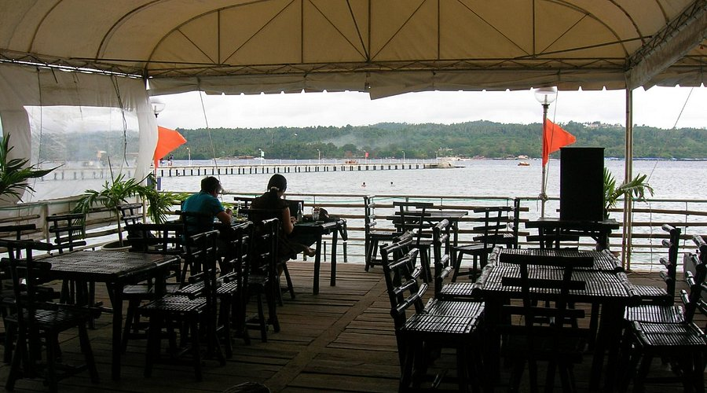
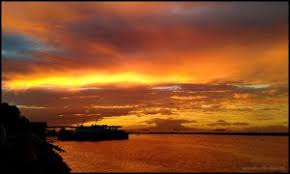
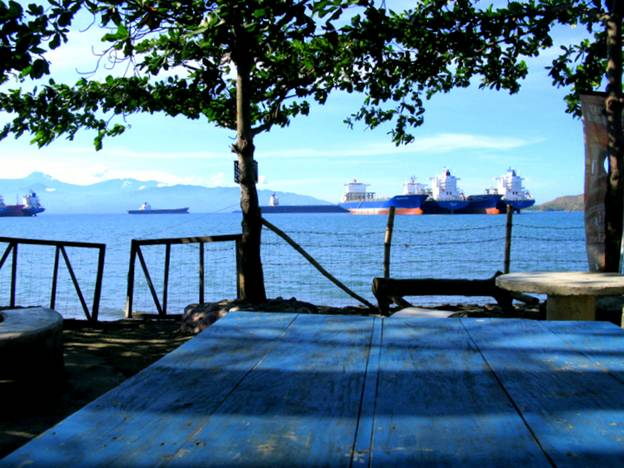

Malalag Bay is a peaceful coastal destination known for its rich aquaculture and stunning sunset views. The bay's calm, protected waters make it an ideal spot for relaxing boat rides, fishing, and exploring local marine life. Visitors can enjoy fresh seafood right by the water and experience the laid-back coastal lifestyle of southern Mindanao.
Experience one of the most naturally protected and calm bays in the region.
Discover the source of Davao del Sur's freshest and most abundant seafood.
End your day with breathtaking, panoramic sunset views over the Davao Gulf.
Malalag Bay is a peaceful coastal destination known for its thriving marine life and stunning horizons. Its calm, protected waters make it an ideal spot for relaxing boat rides, fishing, and exploring the laid-back coastal lifestyle of southern Mindanao. The bay serves as a crucial hub for the local fishing industry. Visitors can take guided boat tours to see the fish pens, learn about sustainable aquaculture, and dine at floating restaurants that serve seafood caught just moments before it hits the grill.

Dine on the water and enjoy the freshest grilled tuna, squid, and local seaweed salads.

Rent a local outrigger boat for a late afternoon cruise to catch the spectacular golden hour.

Take a peaceful stroll along the coast and mingle with friendly local fishermen.
Fly to Francisco Bangoy International Airport in Davao City, then take a bus south.
November to May is the dry season — ideal for outdoor activities and beach trips.
Davao del Sur offers affordable accommodations, food, and transport options.